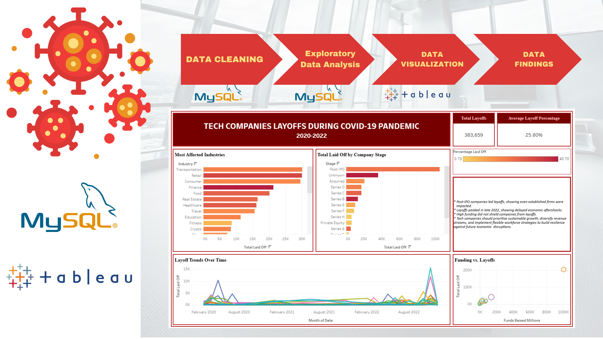
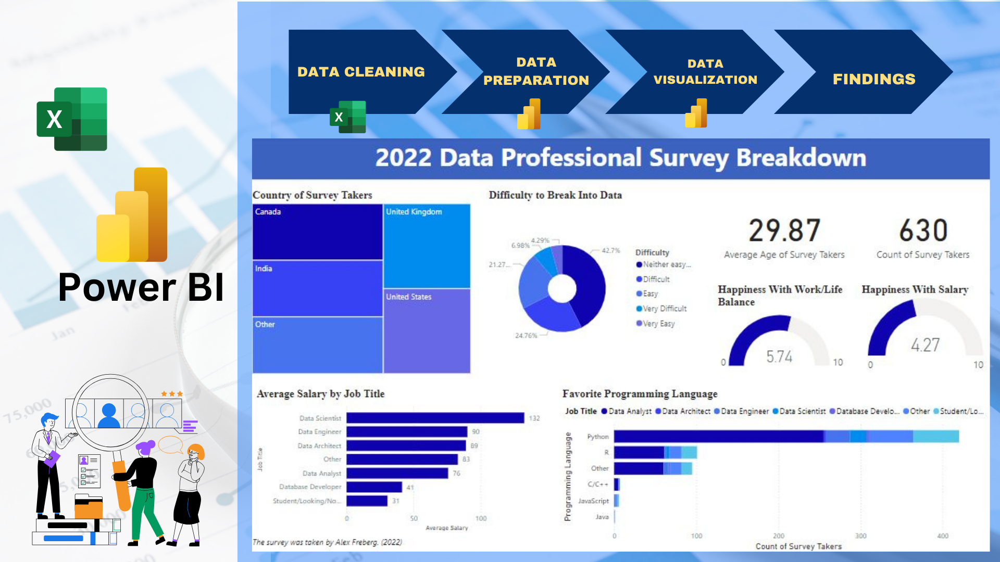
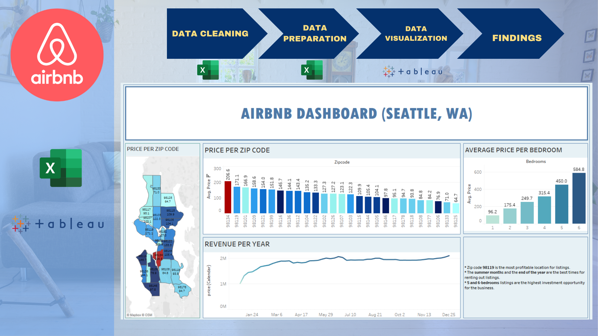

Objective:
To analyze tech layoffs from 2020 to 2022 to uncover industry impacts, company stages affected, and trends influenced by the COVID-19 pandemic.

This project analyzes tech industry layoffs from 2019 to 2022, focusing on the impact of the COVID-19 pandemic. This analysis of 2019-2022 tech layoffs looks at the impact of COVID-19 pandemic. The data was cleaned and prepared using SQL before creating visualizations in Tableau Public.
Key findings show that Transportation, Retail, and Consumer Tech were hit the hardest, with Post-IPO companies leading layoffs.
High funding did not prevent job cuts, highlighting the need for sustainable growth and more diverse revenue strategies to reduce future risks.
Objective: To identify factors influencing data professionals' satisfaction
and provide insights for improving compensation, work-life balance, and skill development strategies.

This analysis visualizes survey data from 630 data professionals to explore career trends.
The Power BI dashboard highlights salary differences, work-life balance, job entry difficulty, and preferred programming languages.
Key insights show moderate satisfaction with work-life balance but low happiness with salary, suggesting a need for better compensation.
Python is the most popular language across roles, emphasizing its importance in data-related careers.

This dashboard visualizes the distribution of healthcare facilities across West Java's regions and highlights health insurance coverage. Kabupaten Bogor leads with the highest number of facilities, emphasizing regional disparities.
Community Health Posts dominate in volume, while specialized hospitals are less common. The dashboard also breaks down health insurance coverage types, providing insights into the accessibility and support systems for various populations.
This dashboard can be accessed through this tableau public link.

This project uses Python to extract data from a Wikipedia page about 10 largest private companies by revenue in 2023 (mostly for fiscal year 2022), according to Forbes. The table was scraped and turned into a Pandas DataFrame, then saved as a CSV file for easy use in future analysis.
The coding for this project can be accessed through this github link.

This dashboard uncovers key patterns in Seattle's Airbnb market. Zip code 98119 emerged as the most profitable location, while summer and year-end were the best times to maximize revenue. Larger properties with five or six bedrooms offered the highest return on investment, highlighting opportunities for hosts targeting premium listings.
This dashboard can be accessed through this tableau public link.